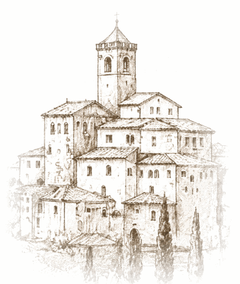

Networking Feminino
As fotos abrem no Google Drive. Toque na foto e use o botão de download.

Ricordi
Escolha o seu evento, veja as fotos e baixe as suas lembranças.
As fotos abrem no Google Drive. Toque na foto e use o botão de download.